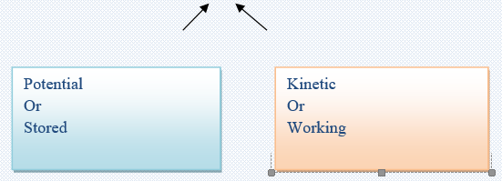
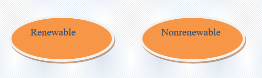
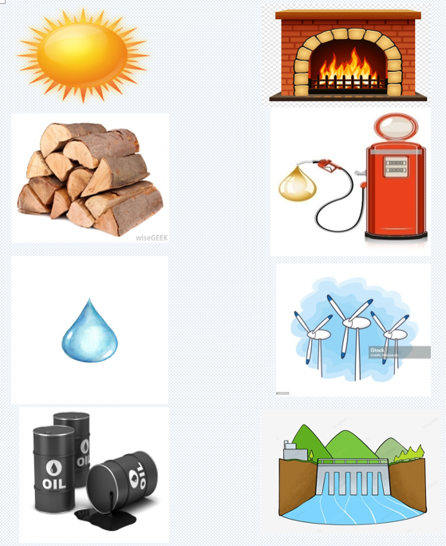
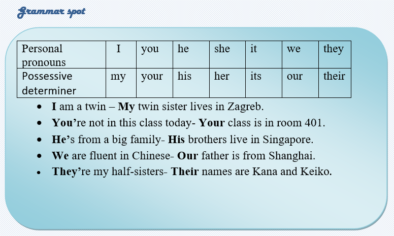
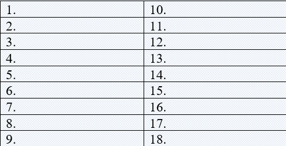
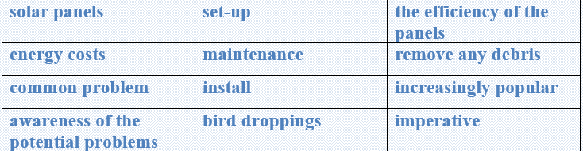

Scientists define energy as the ability to do work. Modern civilization is possible because people have learned how to change energy from one form to another and then use it to do work. People use energy for a variety of things, such as to walk and bicycle, to move cars along roads and boats through water, to cook food on stoves, to make ice in freezers, to light our homes and offices, to manufacture products, and to send astronauts into space.
There are many forms of energy:
Energy
Energy can be converted from one form to another. For example, the food you eat contains chemical energy, and your body stores this energy until you use it as kinetic energy during work or play. The stored chemical energy in coal or natural gas and the kinetic energy of water flowing in rivers can be converted to electrical energy which can be converted to light and heat. There are many different sources of energy, but they can all be divided into two categories: Energy sources:
Renewable and nonrenewable energy sources can be used as primary energy sources to produce useful energy such as heat, or they can be used to produce secondary energy sources such as electricity and hydrogen. Task1 Vocabulary: Match the words with the given definitions.
| Words | Definitions |
|---|---|
| 1. Hydrogen | a. Relating to or resulting from motion |
| 2. 2. Electricity | b. A distinct compound or substance |
| 3. Nonrenewable | c. Not depleted when used |
| 4. Renewable/td> | d. Combustible black sedimentary rock |
| 5. Chemical | e. Change the form |
| 6. Convert | f. A colorless, odorless, highly flammable gas |
| 7. Kinetic | g. Not able to be renewed |
| 8. Coal | h. A form of energy consisting of electrons and protons |
Task2 Reading: Read the text and answer the questions
💠 What is energy?
💠 For what things do people use energy?
💠 What kinds of forms of energy are there?
💠 In what two groups can energy be grouped?
💠 Can energy be converted into one form from another?
💠 Name two main sources of energy
💠 What is the difference between renewable energy and non-renewable one?
Task3Match each energy source with the way we use it.


Task 4 Listening: Do the following tasks
Listen to the recording and repeat these letters after the speaker
Capital letters: A B C D E F G H I J K L M N O P Q R S T U V W X Y Z
Small letters: a b c d e f g h i j k l m n o p q r s t u v w x y z
a) Listen to the recording and write down the letters.

Task5 Writing
✅ Learn the given lexical units.
✅ Work in groups and explain the meanings of the given lexical units.
✅ Try to use them in sentences.

Read the case study and give possible solutions. Solar panels are becoming increasingly popular as a way to save on energy costs, but there are a few common problems that can occur. You are a homeowner with solar panels. Awareness of the potential problems with their set-up and maintenance is imperative. The solar panels you installed were covered with mud, dirt, and debris. There are lots of bird droppings and pollen that have accumulated on the panels. As a result, the efficiency of the panels has been reduced. Suggest efficient ways to remove any debris that built up on the surface. What is the problem? How serious is this situation? What is the cause of this problem? How it is successfully solved? How should it be solved? What is the best way to clean solar panels? Can you present some tips on how to clean solar panels?